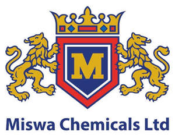

Trade Mark Journal No.2025/019 9 May 2025
UK00004193629 24 April 2025 (1,2,3,4,5,17)

- Class 1
- Chemicals for use in industry, science and photography, as well as in agriculture, horticulture and forestry; unprocessed artificial resins, unprocessed plastics; fire extinguishing and fire prevention compositions; tempering and soldering preparations; substances for tanning animal skins and hides; adhesives for use in industry; putties and other paste fillers; compost, manures, fertilizers; biological preparations for use in industry and science; adhesives; adhesive substances; compositions for repairing surfaces; pastes for use in the repair and filling of holes and flaws in vehicle body surfaces; chemical hardening preparations; smoothing compounds for use in the repair and filling of holes and flaws in vehicle body surfaces; polyester fillers; putties; glass fibre compounds; artificial and synthetic resins; sealing compositions; catalysts for use in the control of Nitrous Oxides emissions; defrosting compositions; anti-freezing compositions; coolants; brake fluids; oils for brakes; clutch fluids; transmission fluids; hydraulic fluids; polish removing substances; valve-grinding pastes; de-icing sprays for windscreens; anti-freeze for windscreen washer systems; rain repellant preparations for use on windscreens.
- Class 2
- Paints, varnishes, lacquers; preservatives against rust and against deterioration of wood; colorants, dyes; inks for printing, marking and engraving; raw natural resins; metals in foil and powder form for use in painting, decorating, printing and art enamels; paint thinners; primer thinners; aerosol paints; sprayable paints; paint sprays; interior and exterior heat resistant paint; interior and exterior rust-resistant paint; rust-resistant primer paint; priming preparations; woodstains; mastics; putty; lacquer for use as a surface coating; coating compositions; coating preservatives; protective coatings; protective paints; vehicle underbody protection paint; underbody protection coatings.
- Class 3
- Non-medicated cosmetics and toiletry preparations; non-medicated dentifrices; perfumery, essential oils; bleaching preparations and other substances for laundry use; cleaning, polishing, scouring and abrasive preparations; barrier creams; room fresheners; air fresheners; fabric fragrances; abrasive pastes; valve-grinding pastes; grease-removing preparations; degreasants; detergents; cleaning preparations for use on vehicles; windscreen cleaning fluids. .
- Class 4
- Industrial oils and greases, wax; lubricants; lubricating oil for motor vehicle engines; dust absorbing, wetting and binding compositions; fuels and illuminants; candles and wicks for lighting.
- Class 5
- Pharmaceuticals, medical and veterinary preparations; sanitary preparations for medical purposes; dietetic food and substances adapted for medical or veterinary use, food for babies; dietary supplements for human beings and animals; plasters, materials for dressings; material for stopping teeth, dental wax; disinfectants; preparations for destroying vermin; fungicides, herbicides; insecticides; pesticides; germicides; insect repellents; preparations for destroying vermin; preparations for killing weeds; deodorants other than for personal use; room freshening preparations; air freshening preparations; powders, sprays and collars, all for killing fleas and all for use with animals; mosquito coils.
- Class 17
- Unprocessed and semi-processed rubber, gutta-percha, gum, asbestos, mica and substitutes for all these materials; plastics and resins in extruded form for use in manufacture; packing, stopping and insulating materials; flexible pipes, tubes and hoses, not of metal; sealants; silicone sealants; sealing compounds; mastics; adhesive tapes; masking tapes; glass fibre compounds.
Miswa Chemicals Ltd
Representative: Spoor & Fisher